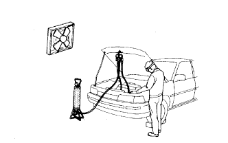
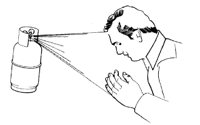
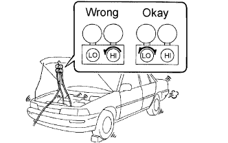

AIR CONDITIONING SYSTEM > PRECAUTION |
| 1.PRECAUTIONS WHEN USING INTELLIGENT TESTER |
When using the intelligent tester to troubleshoot the CAN communication line or LIN communication line:
Connect the intelligent tester to the vehicle, and turn a courtesy light switch on and off at 1.5 second intervals until communication between the intelligent tester and vehicle begins.
After all DTCs are cleared, check if the trouble occurs again 6 seconds after the engine switch is turned on (IG).
| 2.IF ANY OF FOLLOWING CONDITIONS ARE MET, KEEP ENGINE IDLING WITH A/C ON (ENGINE SPEED AT LESS THAN 2000 RPM) FOR AT LEAST 2 MINUTE: |
| 3.DO NOT HANDLE REFRIGERANT IN AN ENCLOSED AREA OR NEAR AN OPEN FLAME |
 |
| 4.ALWAYS WEAR EYE PROTECTION |
| 5.BE CAREFUL NOT TO GET LIQUID REFRIGERANT IN YOUR EYES OR ON YOUR SKIN |
 |
Wash the area with lots of cold water.
Apply clean petroleum jelly to the skin.
Go immediately to a hospital or see a physician for professional treatment.
| 6.NEVER HEAT CONTAINER OR EXPOSE IT TO OPEN FLAME |
| 7.BE CAREFUL NOT TO DROP CONTAINER OR APPLY PHYSICAL SHOCKS TO IT |
| 8.DO NOT OPERATE COMPRESSOR WITH INSUFFICIENT REFRIGERANT IN REFRIGERANT SYSTEM |
 |
| 9.DO NOT OPEN HIGH PRESSURE MANIFOLD VALVE WHILE COMPRESSOR IS OPERATING |
| 10.BE CAREFUL NOT TO OVERCHARGE SYSTEM WITH REFRIGERANT |
| 11.DO NOT OPERATE ENGINE AND COMPRESSOR WITHOUT REFRIGERANT |